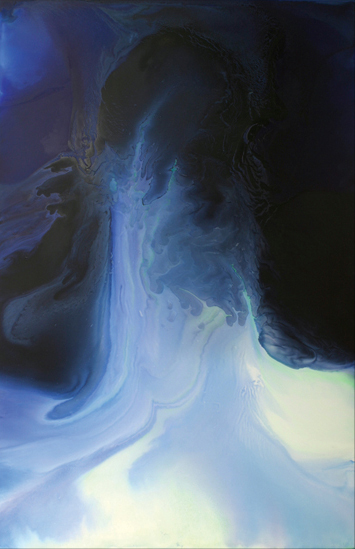

| SANTA MONICA - Walking into the spacious 4,500 square foot gallery of Berman Turner Projects, the room is filled with the power of sexual yin from step one. At the opening of the room is a large red expanse of a moody temptress' vision of landscape and ocean. Another step takes the viewer into a watery transcendence of dark nirvana. Keep going one more inch until finally the eyes land upon a pastelled dream of female orgasm. |
|
| What Water Dreams I. Perhaps the work brings out a kind of womanly darkness melding into masculine light. Or maybe the work is an abstract of dark colors - purple, black, light blue, blue - superimposed over what feels the barely there image of a woman's eye and hair, something of a self-portrait at first observation. "They aren't so figurative of that. But, people do see a lot of different images in abstract art. They kind of bring their own psyche into the painting. The painting is emotional enough for people to feel that way," Woodruff said. "I did this on a really hot day," Woodruff continued. "And, it happened really quickly. And, I just felt like this was a gift. And that is how I came up with the name What Water Dreams. It just felt like a water spirit." Woodruff has been showing her work since the '80's. But, one of her gallery openings that stood out in her mind was in India. |
 |
| "I think the show in India was really good, because it was so different. I was so embraced," Woodruff said. "I was in residency. And, I had a show in New Delhi. Just being in India was a different experience. I was raised in an Eastern Western religion, so I was aware of all these religions. But, until you go there you don't really know what the impact is. Every ten feet there will be a flower. And before you know it, it will turn into a shrine. It's just an unbelievable country. And, they were very friendly, open and accepting of my work." Woodruff got to know William Turner at a showing at his gallery in Venice he's owned since 1991. Turner is also an attorney and has partnered with Robert Berman who has owned his gallery in Santa Monica for over 25-years. The two partner together for Berman Turner Projects. "When I moved from New York to here I saw Bill's gallery. And, I just thought this is where I need to go," Woodruff said of her first connections with Turner. Turner was at the forefront of the opening, warmly greeting guests and hugging friends. The music was above the crush of excited voices and friendly conversations. The soft lighting accentuated the subtle tonal differences of color and texture in the works. Turner said his choice in female artists was purely coincidental that they were women. He said he prefers to choose works based on ability. "I remember the first time I went to Suzan's studio, which was at the recommendation of Peter Frank," Turner said in an interview at the gallery opening. "He knew what I was showing . He came to the gallery and he said Bill, you really should go over and see this body of work Suzan's done. It is very much in your metier." "I went to her studio and looked at her work. And, I thought this is exactly the sort of work I would want to show. That work then was very much about how paint bled into the canvas. They were stained sorts of paintings and had a lot of feminine symbolism to them," Turner said. "Flower, butterfly. . .[inaudible]. This body of work, by contrast, I find is so mature for her, and is the most challenging work she's done to date." Turner was very much into the discussion of Woodruff's history with his gallery. He seemed compelled to tell a tale and spoke with passion about her artistic ability. "Challenging in two ways. First, to execute this work you had to be willing to loose it all. You had to put everything on the line to get the result, because you can get nine tenths of the way there, and it could be very nice. But, it that's extra chance you take. That extra risk you are willing to make that allows for these works to be transformative and as powerful as they are," Turner said. There is a book Turner recommends to artists he works with called Jacobetti's Portrait, which tells of how an initial portrait sitting that was planned for three days turned into a 35-day sitting. "And, the book is a document of the process of the artist," Turner said. "What you realize when you read this book is that this artist, as well-known as he was, as accomplished as he was, as grounded in his technique as he was, every time he sat down he was willing to risk it all. And that anxiety comes through," Turner said. "I think that is a very necessary element for any artist. And if you don't sense that risk in the work, and they play it safe, it shows." "So, what I love about this work that you see that is so beautiful. It's very dangerous. It's walking a tightrope," Turner said. | |